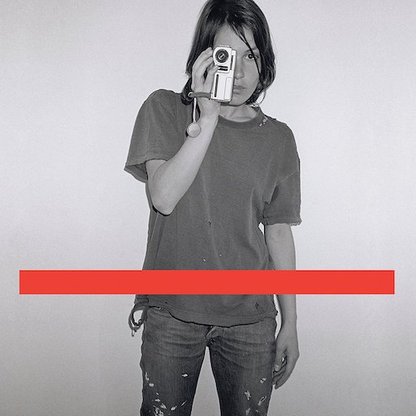

filter ジェネレーター

DEMO
：grayscale(0%) 初期値：0%
：contrast(100%) 初期値：100%
：sepia(0%) 初期値：0%
：blur(0px) 初期値：0px
：saturate(100%) 初期値：100%
ドロップシャドウ：
drop-shadow(0px 0px 0px #000000)
drop-shadow(0px 0px 0px #000000)
：hue-rotate(0deg) 初期値：0deg
：invert(0%) 初期値：0%
：opacity(100%) 初期値：100%
：brightness(100%) 初期値：100%
CSS：
filter: initial;